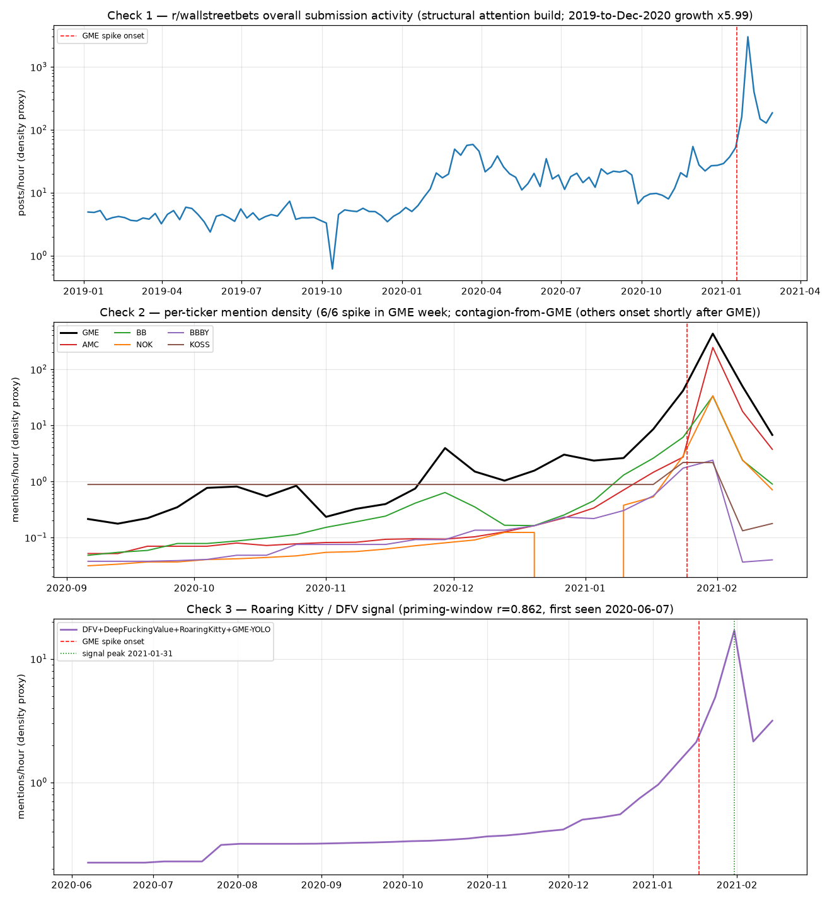
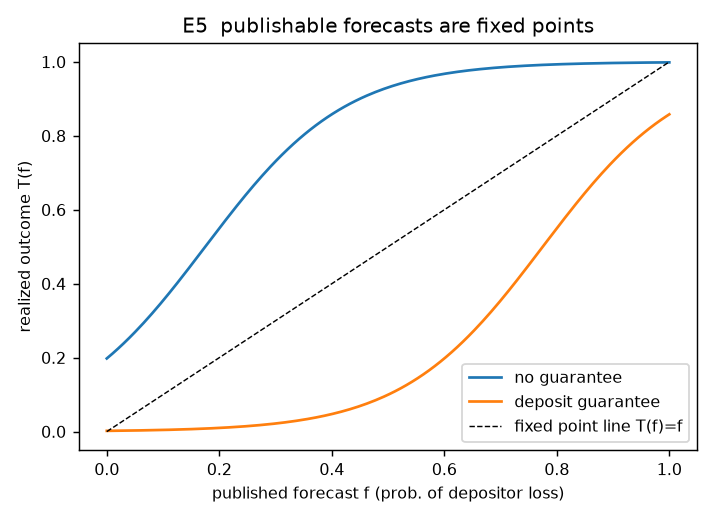
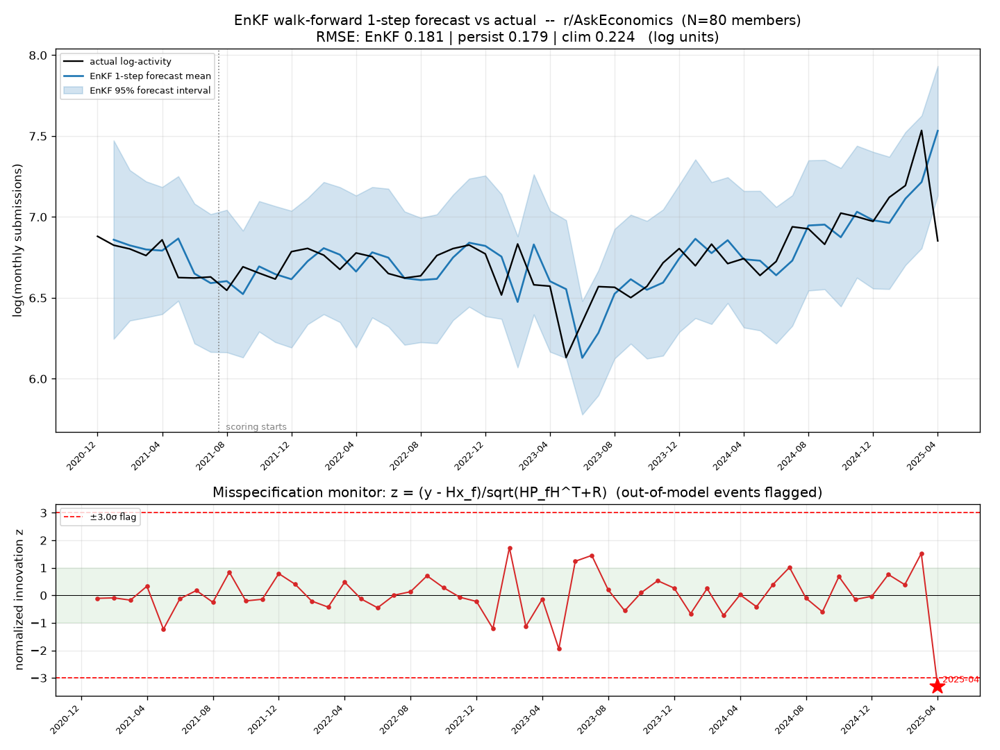

Asimov imagined a science that could forecast the future of a galaxy of people while being useless for any single person. This tutorial builds the bounded, real-world version of that idea one step at a time: why weather is forecastable, which three properties make it so, where society has partial versions of each, and how the whole thing composes into an engine you can run on a single event.
1 · The core idea
The weather is the existence proof
Two hundred years ago, predicting next week's weather looked as hopeless as predicting next week's society looks now. It became routine, and not because of raw computing power. It became routine because the atmosphere has three structural properties that make ensemble forecasting meaningful.
Why forecasting can work
A forecastable system needs: (P1) conserved quantities that confine its trajectories, (P2) weak coupling at the forecast scale so that statistics over quasi-independent regions are meaningful, and (P3) indifference to the forecast itself. The atmosphere has all three natively.
The bounded claim
Society has partial, local, conditional analogues of each property. So the honest goal is not Seldon's perfect Plan. It is an engine that forecasts where the three properties hold, refuses where they do not, and reports its own scope as a first-class output. The conditions, not the compute, are the theory.
The three properties, and society's partial repair of each
Property
In the atmosphere
Society's partial analogue
P1 · Conservation
mass / energy / momentum conserved; motion confined to a manifold
total attention is a roughly fixed budget; a panic creates no new hours. Belief is a drift on that budget, not a stock that appears from nowhere.
P2 · Weak coupling
distant air parcels are nearly independent at the forecast scale
Simon near-decomposability: dense ties inside a community, sparse between. The statistical unit is the block; the effective number of independent units is Neff ≈ K, far below the population.
P3 · Non-reflexivity
the storm never reads the forecast
a published social forecast is an input. It is repaired by only publishing fixed points — forecasts that stay true after everyone acts on them (mean-field-game equilibria).
2 · One week that contains everything
The running example: Silicon Valley Bank, March 2023
Before any math, hold one concrete case in mind. Every mechanism in the framework appears in a single week of the SVB collapse.
Attention concentrated in days (P1 / L2)
A diffuse, calm depositor base focused almost all of its collective attention onto one question — "is my deposit safe?" — within 48 hours. No new attention was created; it was violently reallocated onto SVB out of everything else.
The forecast caused the outcome (P3 / L4)
"The bank will fail" was not a neutral prediction. Acted on by enough depositors, it made the bank fail. This is reflexivity: the forecast is an input to the system it describes.
The run moved inside one block (P2 / L3)
It propagated first within a tightly-coupled professional community (VC-backed startups on the same Slack channels and group chats) before jumping outward. The block, not the individual depositor, was the unit.
One intervention re-selected the basin (control / L5)
A single deposit-guarantee announcement, costing nothing at issue, flipped the system from the "run" equilibrium back to the "no-run" equilibrium — at the exact moment of peak sensitivity. Prediction and control are duals.
Keep SVB in mind as the small case; later we run the whole engine on a bigger one (GameStop) to see all the layers compose.
3 · The ontology
Eight layers: nothing is out of scope
The engine routes any social or economic question onto a stack of mechanism layers. The design insight is that nothing is refused: a value judgement is not dropped, it becomes a per-block valence prediction; a question that needs a number does not break the model, it triggers the data layer. Most questions live in the quiet accounting core; the dramatic machinery is a rare special regime.
Layer
What it does
Seen in
L0 · Valence
resolves "is this good or bad" per block, not in the absolute. Inequality is structurally guaranteed; the sign flips with tribe size.
the data-acquisition and assimilation layer. When a question needs a number, go fetch and cite it; run a filter; flag when the model has been left behind.
Running the whole engine on GameStop, January 2021
Now we take a single canonical case — the January-2021 GameStop / meme-stock short squeeze — and walk it down all seven mechanism layers (L0–L6) in order, then an L7 synthesis that ties them into one verdict. Each panel states what that layer contributes, shows the real result or figure where the project has one, and is tagged honestly where the layer is shown illustratively.
What this is
A pedagogical integration: it stitches the project's real GameStop analyses (the structural-overdetermination counterfactual, the operator-signal detector, the early-warning battery, the EnKF forward test) together with the engine's layer definitions into one seven-layer narrative. Read top to bottom, it is the "Prime Radiant view" of a single Seldon Crisis.
What this is not
It is not a claim that a fully-coupled, end-to-end engine has been validated. No layer feeds its state into the next in code here; each layer's result was produced by a separate retrospective analysis on a coarse mention-density proxy. L2 (attention transport) and L4 (reflexivity) lack a clean real-data realization on GameStop and are shown illustratively.
§ HONESTY RAILReal layer-slices, composed by hand — not a coupled run. The bottom-line verdict (L7 synthesis) is a genuine project finding (Seldon-Crisis-not-Mule at the aggregate); the L0–L6 ordering is a teaching device. Every panel carries its own provenance tag: REAL RESULT where a backtest produced the number/figure, ILLUSTRATIVE where the layer is a simplified or qualitative gloss.
L0
Valence — "us vs them"
ILLUSTRATIVE · qualitative
What L0 contributes: resolves the "is this good or bad" question per block rather than in the absolute. GameStop was never one public; it split into opposed valence camps, and that conflict framing is the order parameter the later layers ride on.
Block
Reads the squeeze as
Why (structural)
Retail / r/wallstreetbets
positive — righteous
a populist strike against short-selling funds; identity-defining "us"
Short-selling hedge funds
negative — manipulation
their short position is the loss; the "them"
Brokerages / clearing
negative — systemic risk
collateral and settlement exposure; the buy-button halt
Regulators / media
mixed
read as either market-democratization or as a disorderly bubble
§ Qualitative valence table only — no per-block sentiment series was extracted. The blocks and signs are an analyst reading of the public record, not a measured field.
L1
Slow stocks — the squeeze as a drain
ILLUSTRATIVE · schematic
What L1 contributes: the quiet accounting core. Underneath the meme is a stock-and-flow: the shorts' borrowed-share obligation is a stock that must eventually be covered, and short interest above 100% of float means the stock is structurally over-committed before any belief dynamics fire.
Short interest >100% of float (over-committed stock)→ price rises →Margin / collateral pressure mark-to-market loss accrues→ forced covering →Shorts buy to close covering buys push price further up↺ self-reinforcing drain
A systems schematic: the "shares owed by shorts" reservoir drains as price rises, and the draining act (covering) is itself an up-flow on price — a reinforcing loop, the accounting skeleton the attention dynamics then animate.
§ Schematic, not a fitted stock-flow model. The project's GameStop analyses measured Reddit attention, not short interest, float, or price; the >100%-of-float fact is from the public market record.
L2
Attention transport — concentration onto GME
ILLUSTRATIVE · tied to a real number
What L2 contributes: collective attention is a conserved measure; the squeeze is attention reallocating out of the rest of the market and onto the meme basket, not appearing from nowhere.

The r/wallstreetbets attention build. The real, measured anchor for L2: overall WSB activity rose ×5.99 from 2019 to Dec-2020 before GME spiked — and GME's own mention-density amplified ×970 at peak. Attention concentrated violently onto one topic out of thousands.
§ The ×5.99 rise and ×970 amplification are real measured numbers; the conservation framing (drawn from a fixed budget elsewhere) is illustrative — no market-wide attention ledger was computed. ▸ the conservation math & Demo A
L3
Blocks & Neff — the basket synchronized
REAL RESULT · 6/6 same week
What L3 contributes: the meme basket (GME / AMC / BB / NOK / BBBY / KOSS) behaved not as six independent tickers but as coupled blocks that locked together — inter-block coupling crossed Kc, Neff collapsed toward 1, and the law of large numbers that would have averaged them out evaporated.
6 / 6
meme tickers peaked in the same week (2021-01-31)
×970 – ×3501
simultaneous amplifications (GME ×970, AMC ×3501, NOK ×875, BB ×423)
Neff → 1
six "independent" tickers do not peak in one 7-day window by chance
§Real result from the counterfactual backtest. Honest caveat: the basket was selected on the outcome, so "the known basket spiked together" is partly hypothesis-confirming; and the co-peak is partly endogenous contagion (GME led, the rest ignited within days).
L4
Reflexivity — the self-fulfilling fixed point
ILLUSTRATIVE · demo analogue
What L4 contributes: the squeeze is a self-fulfilling prophecy made common knowledge. "If enough of us hold and buy, the shorts must cover and the price goes up" is true once everyone acts on it. Roaring Kitty functioned as a focal coordination device (he made the thesis common knowledge), not a capital-bearing controller who moved the price himself.

The reflexive reaction map. Imitative coupling gives a bistable portrait: a "nobody squeezes" fixed point and a "the squeeze is on" fixed point. Common-knowledge coordination tips the basin from one to the other.
§Illustrative. No reflexive fixed-point model was fit to GameStop data — the bistability figure is the framework's generic reaction map, reused by analogy. ▸ run the bistable map live (Demo C)
L5
Criticality & early warning — a mixed result
REAL RESULT · AUC 0.915, but…
What L5 contributes: the run-up to an endogenous cascade should show critical slowing-down (rising variance / autocorrelation). On GameStop the impersonal early-warning signal is strong — but the honest finding is that it does not generalize across a roster, while the operator buildup is the platform-specific signature that does carry mechanism information.
AUC 0.915
GameStop early-warning, the cleanest single case — SUPPORTS
+0.012
endo−exo separation across the 10-event roster — essentially zero
The operator-signal detector. The DFV / Roaring Kitty signal ramps 13 consecutive weeks into the squeeze, vs only 2–3 weeks of news-anticipation for macro shocks. Gradual internal buildup vs sudden external shock — the discriminator that does not wash out.
§Real, but deliberately mixed. GameStop AUC 0.915 is genuine; the roster-level non-separation (+0.012, p=0.91) is the honest negative reported alongside it. ▸ the powered early-warning test
L6
Observation & assimilation — the misspecification monitor
REAL RESULT · honest negative
What L6 contributes: the assimilation loop — an Ensemble Kalman Filter run strictly causally on a real block, scoring 1-step forecasts and, crucially, flagging when it has left its own model. This is the engine's self-diagnosis layer: it announces a regime break in real time without any future information.
z = −3.33
misspecification monitor flagged a real regime break (Apr-2025) in real time
beats climatology
EnKF RMSE 0.181 vs 0.224; 95% coverage 0.98
ties persistence
RMSE 0.181 vs 0.179 — does NOT beat last-value (the honest negative)

The EnKF forward test. Top: strictly-causal walk-forward 1-step forecast vs actual with the 95% ensemble band. Bottom: the normalized-innovation monitor, firing on the 2025-04 out-of-model event — the "Mule" / regime-break signature.
§Real result, with an honest negative. This slice runs on r/AskEconomics monthly activity, not on GameStop. The EnKF beats climatology and is best-calibrated, but does not beat persistence; the load-bearing positive is the self-diagnosing monitor. ▸ the EnKF test
L7
Synthesis — the Prime Radiant verdict
REAL RESULT · the integrated reading
What L7 contributes: ties the active layers into one verdict and reports it at the resolution it is valid for. The whole point is that the answer to "was GameStop predictable?" is resolution-dependent.
COARSE — would a squeeze happen at all?
OVERDETERMINED · Seldon Crisis
Attention rose ×5.99 structurally before GME (L2), and 6/6 tickers fired in one window (L3). A retail short-squeeze cascade was structurally likely with or without any single operator. Psychohistory holds at the aggregate.
MEDIUM — which flagship, how big, exact week?
OPERATOR-SHAPED
That GME (not AMC) was the flagship, ran to its historic magnitude, and fired in the specific week reflects Roaring Kitty's 13-week buildup (L5) and the focal coordination he provided (L4). The susceptibility chose a squeeze; the operator chose which and how big.
FINE — this exact path?
CONTINGENT · not forecastable
DFV's exact updates, the gamma-squeeze mechanics, the Robinhood buy-button halt, the peak price — a single realized path the engine cannot predict and that is genuinely individual-contingent (L6 regime break).
Bottom line: closer to a Seldon Crisis than to the Mule. Roaring Kitty was causally important but not structurally necessary for a cascade — he selected the branch (flagship, magnitude, timing), not whether a cascade happened. The engine forecasts the transition at the coarse scale and reports its own skill horizon shrinking to zero at the fine scale: the verdict and its scope are the output.
§ The three-resolution verdict is a genuine project finding. What is illustrative is the coupling: these layer-slices were run as separate analyses and assembled here by hand. ▸ see every underlying test
5 · Three ideas worth their own panel
Belief, control, and the governance trilemma
Three ideas underpin everything else and have no slider of their own. Each carries its own honesty rail.
◈◈ schematic
Belief is a drift field, not a stock
The naive reduction — belief as a kind of attention — fails on sign: you can attend maximally to what you reject (protest, hate-consumption). Belief is therefore not a conserved sub-measure but a direction imposed on attention's transport. Attention is the conserved carrier; belief steers it; valence (approving vs hostile) rides on top as a non-conserved order parameter.
ρ · attention conserved carrier— steered by →b · belief drift a direction, not a stock
valence — sign of disposition (approve / reject) non-conserved order parameter, rides on top
J = ρv (advection) − D∇ρ (diffusion) + ρ·b (belief drift). High ρ with b pointing inward = legitimacy; high ρ with b pointing outward = crisis (the failing bank, at 48-hour intensity). ▸ the equation
§ Honest: the "flows in from neighbors" reading is exact for the advective and belief terms, approximate for the diffusion term; the continuity equation conserves the integral, not a directed ledger of each unit.
◈◈ schematic
The prediction–control duality
At a critical point the susceptibility χ diverges: a push in the one direction the crowd is already poised to move along gets amplified without bound. This single fact has opposite signs for the two tasks — fatal for prediction (unobservable noise decides the branch), but leverage for control (a minimal intervention coupled to the soft mode chooses the branch). The same divergence that ruins forecasting maximizes steerability.
Regime
Diagnostic
Mode
Smooth
low cross-block synchrony
open-loop prediction (MFG fixed points)
Pre-critical
rising synchrony, slowing-down
early warning; forecast the transition, not the branch
Critical
ξ, χ diverging
maximal manipulability (hazard flag); control only under governance
The SVB resolution made policy: one guarantee, costing nothing at issue, re-selected the no-run basin at peak susceptibility. Asimov's Minimum Necessary Change is the same claim.
§ Honest: presented as a diagnostic and a warning, not a build spec. The control-synthesis layer is deliberately withheld (governance). Minimal-in-amplitude ≠ minimal-in-consequence: the same minimality makes covert capture cheap.
◈◈ schematic
Governance, dual-use & the observability trilemma
Read adversarially, the duality is the theory of operation of low-cost population steering — the math does not distinguish a benign deposit guarantee from a manufactured stampede; only the objective does, and the objective cannot validate itself. Complete predictability would require total observability (a panopticon) and the abolition of independent agents (the end of pluralism). The trilemma is a reason to stop, not a frontier to push.
PredictionAgent independenceBounded observation
Pick any two. Perfecting prediction requires surrendering one of the other two — and the surrender of independence is the abolition of the boundary that makes a person a person.
§ The corpus hazard: the calibrated reanalysis corpus already exists privately, held at population scale by closed actors (the Facebook contagion experiment manipulated 689,003 feeds). The binding constraint is access, not existence — and possession of block-level attention history is itself a controller precursor.
6 · Try it yourself
Route a question onto the layers
Paste any social or economic question. A keyword classifier maps it onto the layer ontology, guesses a scope verdict, points you at the relevant demo, and writes a short reading. It will be honest if your question only hits the slow-stock core.